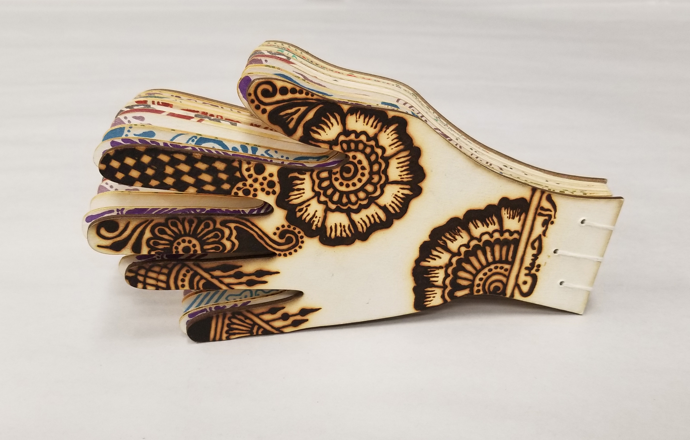
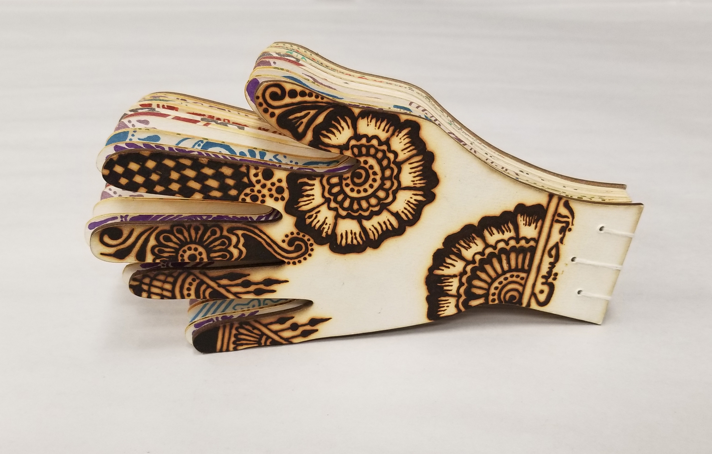

Rabia Hussain
Visual Artist | Designer

I am a fun-loving Brooklyn based art-enthusiast with a focus in graphic design. I have a keen interest in type and language based art and activism or socially engaged design work which has become a part of my primary design practice. I recently acquired my B.A degree in Electronic Design and Multimedia from CCNY Art Dept and was also a recipient of the James R. Steers Prize in Art. I have recently completed a summer internship with Esther K. Smith at Purgatory Pie Press , where I assisted in various bookbinding projects. More recently I designed the main visuals for BMCC's Women's HerStory Month, which were used form events and conferences. I also had the honor to present a solo art exhibiton called Intricacies which was sponsored by BMCC's Women's Resource Center.
I previously acquired an Associate in Multimedia Arts and Communications from Borough of Manhattan Community College, and currently work as a Supplemental Instructor at the Learning Resource Center. My most enjoyable design aspects are hand drawn typography, vector illustration, logo/branding and publishing.
When I’m not designing, I invest my time in photography, henna, painting, calligraphy and bookbinding. I also run an Etsy shop, RubysCornerltd, where I sell handmade craft as a side gig.
Please send your emails and inquiries at this address.
rabia.hussain.0122@gmail.com


 
